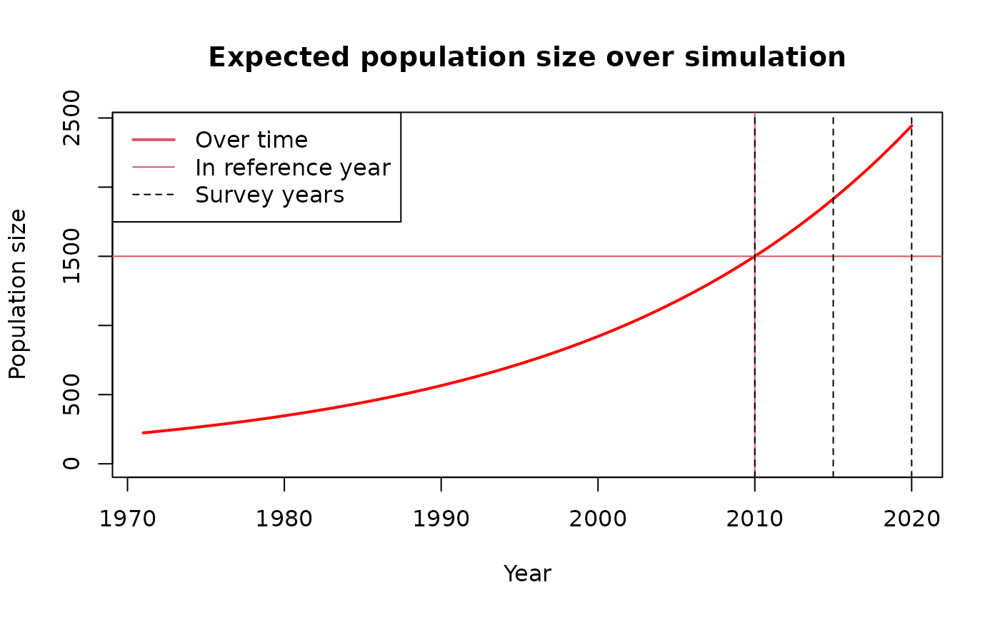

Simulating populations and studies
simulating-populations-and-studies.RmdThis is a basic example which shows you how to simulate a wildlife population and a sampling-survey study of it:
# Load close-kin utilities package
library(ckutils)
# Population size in reference year
ref_yr = 2010
exp_N_ref = 1500
# Population growth rate
lambda = 1.05
# Survey years
srvy_yrs = c(2010, 2015, 2020)
# Simulation length
sim_len = 50
# Simulation years
fnl_yr = tail(srvy_yrs, 1)
init_yr = fnl_yr - sim_len + 1
sim_yrs = init_yr:fnl_yr
# Expected population size over simulation years
exp_N_init = exp_N_ref * lambda^(init_yr - ref_yr)
exp_N_t = exp_N_init * lambda^(0:(sim_len - 1))
# Plot expected population size over simulation years
plot_exp_pop(sim_yrs, exp_N_t, ref_yr, exp_N_ref, srvy_yrs)
# Find expected numbers of kin-pairs in population
find_exp_ns_kps(
exp.N.t = 20*1.05^(1:20), s.yr.inds = 1:2, phi = 0.9, rho = 0.15,
lambda = 1.05, alpha = 5, srvy.yrs = c(18, 20), k = 2
)
#> $wtn
#> N.s.yrs APs POPs SMPs SFPs FSPs HSPs
#> [1,] 21.00 210.0000 24.93750 27.35514 28.00031 4.102449 47.15056
#> [2,] 22.05 232.0763 26.18438 28.72290 29.41366 4.102449 49.93166
#>
#> $btn
#> APs SPs POPs SMPs SMPs.kwn.age SFPs FSPs HSPs
#> [1,] 463.05 17.01 52.09875 56.82054 0.3904464 56.61519 8.093546 97.24864
# Set random seed for testing
set.seed(1)
# Simulate one population and study
pop_study = sim_pop_study(
phi = 0.9, lambda = 1.05, N.init = 20, hist.len = 20, srvy.yrs = 20, k = 1,
f.year = 20, p = 0.5, L = 10, imaf = 0.5, clvng.p = 0, tmp.emgn = 0,
alpha = 5, clvng.ints = F
)
# Look at it
head(pop_study)
#> ID mum dad C20 Cvg20
#> 10 10 NA NA 1 0
#> 11 11 NA NA 1 0
#> 20 20 NA NA 1 0
#> 28 28 10 14 1 1
#> 32 32 21 18 1 0
#> 39 39 3 19 1 1
names(attributes(pop_study))
#> [1] "names" "row.names" "class" "avg.phi.obs" "beta"
#> [6] "N.t.vec" "ns.caps" "Ns" "ns.clvng" "alive"
#> [11] "alv.s.yrs" "f.age" "mum" "dad" "ID"
#> [16] "ind.gts"